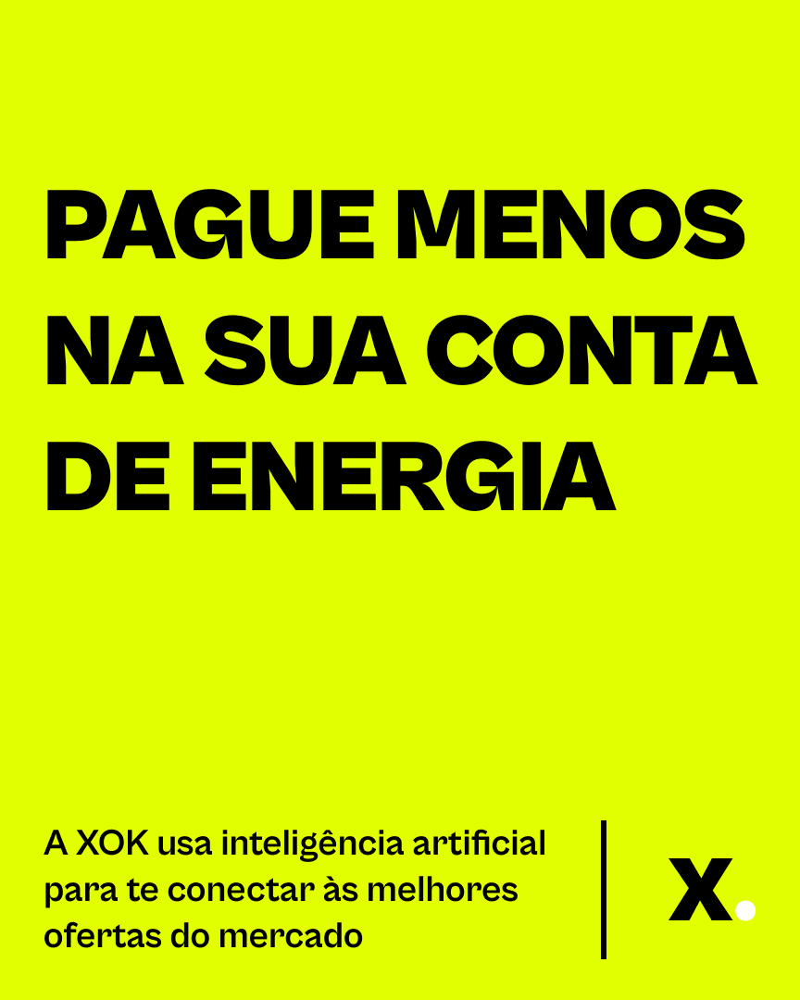
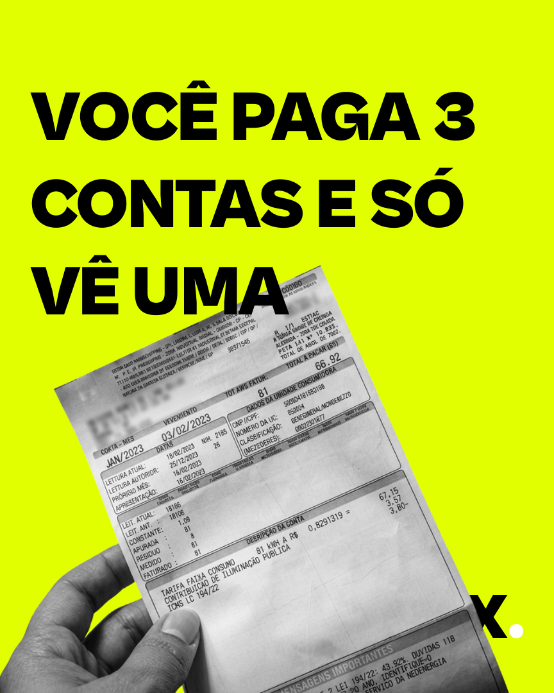

Você fotografa a fatura
Uma foto ou o PDF da sua conta de luz. Ela contém todas as informações que precisamos.
A XOK é uma plataforma que conecta você a geradores e comercializadoras no mercado livre de energia.
Quem gera a energia é o fornecedor.
Quem entrega pela rede continua sendo a sua distribuidora.
Nós encontramos, entre as ofertas disponíveis, a que mais combina com o seu padrão de consumo.
Uma foto ou o PDF da sua conta de luz. Ela contém todas as informações que precisamos.
Distribuidora, histórico dos últimos meses, classe tarifária e padrão de uso. É o que define para qual oferta você se encaixa.
Uma, clara, com o preço fixo e a validade. Sem tabela comparativa, sem letra miúda, sem escolher entre dez fornecedores que você não conhece.
Contrato de 24 meses com preço travado. A migração é feita nos bastidores. Sua rotina não muda.
A lista define a ordem de convite para os primeiros testes e para o lançamento. Quanto mais completo o seu cadastro, mais cedo conseguimos saber se existe oferta disponível para o seu perfil na sua região.
Um resumo mensal por e-mail com o andamento da abertura do mercado, o que mudou na regulação e onde a XOK chegou. Sem venda, sem promoção. Você pode sair a qualquer momento com um clique.
Proposta comercial, contrato ou cobrança. A XOK está em fase pré-operacional e não comercializa energia. Nada será cobrado de você em nenhuma etapa da lista.
Acesso a um canal de varejo residencial e de pequeno comércio, com consumidores agrupados por perfil de carga em blocos previsíveis.
ver a proposta para fornecedoresBenefício de energia para a sua base de funcionários ou associados, sem custo para a instituição e sem processo licitatório de compra.
ver a proposta institucionalNão. A XOK está em fase pré-operacional. A plataforma está em desenvolvimento e o lançamento comercial está planejado para acompanhar a abertura do mercado livre para o Grupo B. Hoje só existe a lista de espera.
Não. A XOK é uma plataforma de intermediação: conecta consumidores a geradores e comercializadoras autorizados. O contrato de fornecimento é entre você e o fornecedor. A entrega física da energia continua sendo feita pela rede da sua distribuidora.
Depende do seu perfil. A Lei nº 15.269/2025 prevê abertura progressiva do mercado livre para o Grupo B, com ampliação completa até novembro de 2028. Pequenos comércios têm previsão de entrar antes das residências. O cronograma é definido pelo poder concedente e pode ser alterado.
Não temos como afirmar um número para o seu caso, e desconfie de quem afirmar. As estimativas de mercado para consumidores do Grupo B no ambiente livre ficam na faixa de 12% a 20% (Fonte: ABRACEEL, 2024). O valor real vai depender do seu consumo, da oferta disponível na sua região e das condições vigentes quando o mercado abrir.
Não e não. A distribuidora continua responsável pelos fios, pelos postes, pela manutenção e pelo atendimento de emergência. O que muda é de quem você compra a energia, não por onde ela chega.
Por dois motivos, e vale ser direto sobre os dois. Primeiro: a fatura contém o histórico de consumo, que é o que permite dizer se existe oferta compatível com o seu perfil. Segundo: estamos usando faturas reais para desenvolver e testar a leitura automática da plataforma. Os dados são tratados conforme a LGPD, não são vendidos nem compartilhados com terceiros para fins de marketing, e você pode solicitar a exclusão a qualquer momento.
Não. Não há contrato, não há reserva, não há cobrança. Você recebe atualizações por e-mail e pode sair quando quiser. Quando a plataforma estiver disponível, você decide se quer ou não seguir.
A XOK é desenvolvida pela Hub22. O modelo de negócio, a estrutura operacional e a análise regulatória foram construídos com apoio da consultoria Finscale.
Acompanhe nossas redes sociais em @xokenergia

